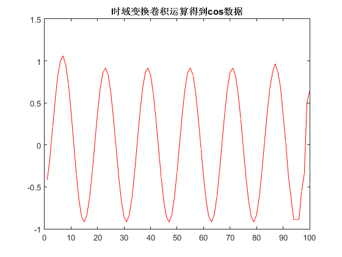

实验III：通信信号统计特性分析、仿真实现及应用
之一： Hilbert变换的实现方法 参照例 4.7-1 2016.11.4
Contents
准备环境
clear all close all clc
生成正弦信号样本
N=100点正弦信号1000Hz，采样率16000Hz
N = 100;
f = 1000;
fs = 16000;
sinData = sin(2*pi*f/fs*(1:N));
figure(1),plot(sinData)
title('100点正弦信号1000Hz，采样率16000Hz')
设计hilbert滤波器
时域冲激响应
step = 30; h = zeros(1,step); for i = 1 : step ind = bitand(abs(i-step/2),1); if(ind == 1) h(i) = 2/pi/(i-step/2); end end % show h(n) figure(2), stem(h) title('时域冲激响应')
频域传递函数
H = zeros(1,N); for p = 1 : N if(p<= N/2) H(p) = -j; else H(p) = j; end end % show H(p) figure, stem(imag(H)) title('频域冲激响应')
1：时域变换卷积运算得到cos数据
时域卷积
cosData = conv(sinData,h,'same'); figure(1);plot(cosData,'r') title('时域变换卷积运算得到cos数据')
......时域方法数据校验
确认相位差pi/2 自相关确定延迟点数D
[c,l]=xcorr(sinData,cosData,'coeff'); % figure,stem(l,c) [m,indx] = max(c); D = abs(indx - N) +1
D =
4
变换前后数据对比
figure;plot(sinData);hold on plot([cosData(D:end) zeros(1,D-1)],'r') title('变换前后数据对比') legend('变换前','变换后')
D转换成弧度 找到周期
[C,I]=find(sinData==1); T = I(2)-I(1)
T =
16
相位差
delta = D/T; disp(['相位差为：',num2str(delta*2),'pi'])
相位差为：0.5pi
2：频域变换乘积得到cos数据
频域乘积后反变换
cosData = real(ifft(fft(sinData).*H)); % figure,plot(sinData);hold on figure,plot(cosData,'r') title('频域变换乘积得到cos数据')
......频域方法数据校验
确认相位差pi/2 自相关确定延迟点数D
[c,l]=xcorr(sinData,cosData,'coeff'); % figure,stem(l,c); [m,indx] = max(c); D = abs(indx - N) ;
变换前后数据对比
figure;plot(sinData);hold on plot([cosData(D:end) zeros(1,D-1)],'r') title('变换前后数据对比') legend('变换前','变换后')
D转换成弧度 找到周期
[C,I]=find(sinData==1); T = I(4)-I(3)
T =
16
相位差
delta = D/T; disp(['相位差为：',num2str(delta*2),'pi'])
相位差为：0.5pi
3.对比内置函数 hilbert
cosData = imag(hilbert(sinData)); figure;plot(cosData,'r') title('内置函数 hilbert变换数据')
......内置函数 hilbert方法数据校验
确认相位差pi/2 自相关确定延迟点数D
[c,l]=xcorr(sinData,cosData,'coeff'); % figure,stem(l,c) [m,indx] = max(c); D = abs(indx - N)
D =
4
变换前后数据对比
figure;plot(sinData);hold on plot([cosData(D:end) zeros(1,D-1)],'r') title('变换前后数据对比') legend('变换前','变换后')
D转换成弧度 找到周期
[C,I]=find(sinData==1); T = I(2)-I(1)
T =
16
相位差
delta = D/T; disp(['相位差为：',num2str(delta*2),'pi'])
相位差为：0.5pi